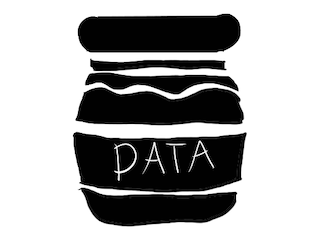
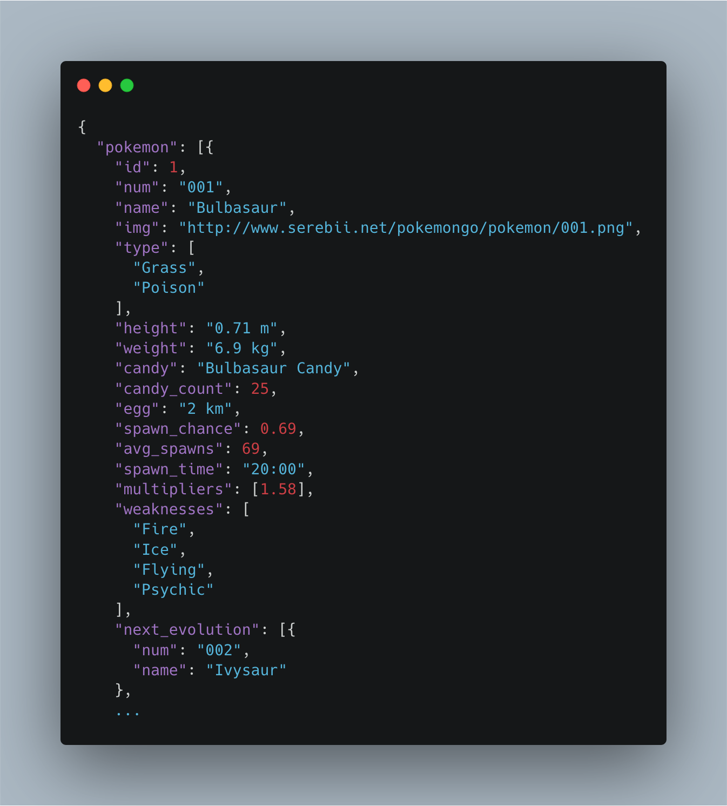

Lyrics bot in V
V is all the rage in various hacker circles. There has been quite a lot of fuss recently about this little language over promising. I'm not going to take sides, or even rehash the arguments, but I am going to explore a little bit of this fun language.
With multiple thousand stars on github people are excited about the promises and potential of this language. From the landing page we see
Simple, fast, safe, compiled language for developing maintainable softwarewith claims that the language
Compiles itself in < 1s with zero dependencies.
I opted to use a pre-built version of the language. Installation was extremely easy and I had V up and running in minutes. Honestly, this was a pleasant change from some of the other languages I have been playing with recently.
The claim to fame is extremely fast build times and very small, dependency free, executables. This doesn't often matter for data science projects, but in our case we are creating a Command Line Interface (CLI) and we don't want it to take up too much space.
However, the entire language + standard library is less than 2MB and the final code (compiled) for this post is $\sim200$kb which is quite nice.
Data acquisition pipeline
The true "secret sauce" of modern data applications is not the fancy ML methods, but the data itself. In truth, with the abundance of open source tools in data science, one can achieve quite good performance with off the shelf methods. However, if your data is low quality (or non-existent) then you will have a tough time building quality data services.
In this post, we'll talk about one simple way to gather data. Through APIs and JSON.
Jason?
JavaScript Object Notation, otherwise known as json (J-sawn) was created in the early 2000s as a stateless interchange format. It allows applications to communicate over the wire in blobs of information.
It is a nice way to associate key-value pairs for data storage and transmission.
In this example, we have a list of all pokemon, we are just showing the best one. You could query the object and ask for its id, name, weaknesses, and more. In many languages this is called a hash-map, in others it's referred to as a dictionary.
V uses structs as the principle data structure when working with JSON.
struct Pokemon {
id int
num string
name string
...
weakness []string
}
As a simple example, if we had a json of people and we wanted to explore our data, we could create a struct as follows.
struct Person{
name string
age int
blood_type string
}
Then, when our data comes from our database
[{"name":"judd", "age":34, "blood_type": "o-"}, {"name": "jill", "age":46, "blood_type": "red"}]
We can use our struct to decode the json then print out the resulting pieces in an informative way.
import json
struct Person {
name string
age int
blood_type string
}
fn main(){
s := '[{"name":"judd", "age":34, "blood_type": "o-"}, {"name": "jill", "age":46, "blood_type": "red"}]'
p := json.decode([]Person, s) or {
eprintln('oops')
return
}
for person in p {
println("-----")
println("hello ${person.name}")
println("you are ${person.age} years old")
println("your blood type ${person.blood_type} is useful to us")
println('')
}
}
bash-3.2$ v run person.v ----- hello judd you are 34 years old your blood type o- is useful to us ----- hello jill you are 46 years old your blood type red is useful to us
This is pretty great! Let's now build our little CLI
Muzak
We are going to use the https://api.lyrics.ovh/v1/ API to get lyrics to whatever songs we like. We're then going to display those lyrics to the command line.
V makes this easy by providing http and flag modules. We simply get the user's information from command line arguments
mut fp := flag.new_flag_parser(os.args)
fp.application('get_lyrics')
fp.version('v0.0.0.0.1')
fp.description('Get lyrics to your favorite song')
fp.skip_executable()
artist := fp.string('artist', '', 'artist which sang the song')
song_str := fp.string('song', '', 'song which was sung')
Which allows us to call the executable easily as
bash-3.2$ ./lyrics --artist "" --song ""
After we have the desired artist name and song title, we can request that from the API
s := http.get_text(api + artist +'/' + song_str)
Which we then decode
song := json.decode(Song, s) or {
eprintln('Failed to parse json')
return
}
The song comes back in the form
struct Song {
lyrics string
}
This is then parsed and printed.
./lyrics --artist "beach boys" --song "wouldn't it be nice" Wouldn't it be nice if we were older? Then we wouldn't have to wait so long And wouldn't it be nice to live together In the kind of world where we belong? You know it's gonna make it that much better When we can say goodnight and stay together Wouldn't it be nice if we could wake up ...
./lyrics --artist "jackson 5" --song "abc"
Easy as that. We now have a functioning command line application that gives the lyrics to our favorite song. From there we can analyze digram frequency, word usage, sentiment, or more!
* Code based on top HackerNews CLI